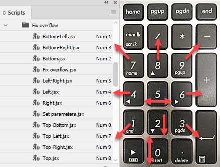
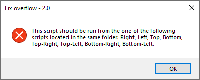
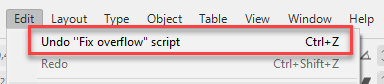
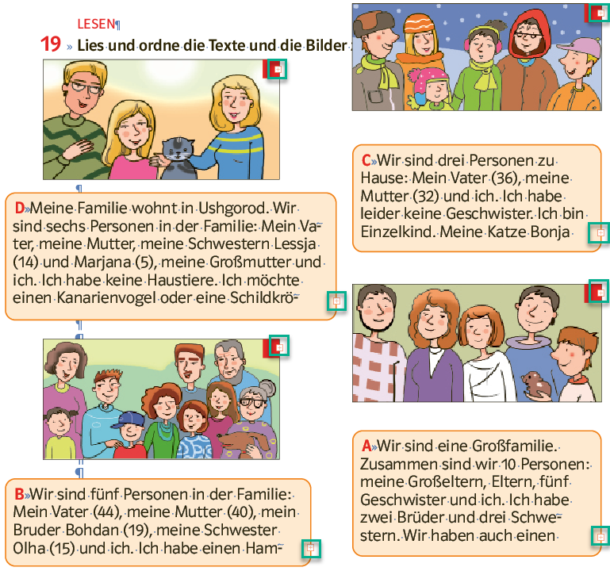
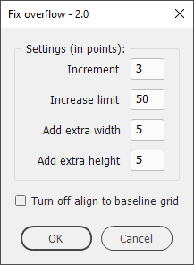

Fix overflow
A set of scripts for InDesign for expanding overflown text frames in a chosen direction. Written in version 2022 by Kasyan.
There is the main script (Fix overflow) — which does the job — and 10 other scripts that expand the selected text frame in a certain direction:
- Bottom
- Bottom-Left
- Bottom-Right
- Left
- Left-Right
- Right
- Top
- Top-Bottom
- Top-Left
- Top-Right
Technically speaking, these scripts trigger the main script — via the doScript() method — using their names as arguments. In my opinion, it’s quite an elegant solution.
I assigned keyboard shortcuts to each script on my numeric keyboard where arrows give an intuitive suggestion about the direction of expansion.

Fix overflow.jsx isn’t supposed to be run by the user. If you run it, it will give you a warning:

If, after running the script, you get a wrong result, you can undo (and redo) the script and try it again using another direction.

The idea to write this script crossed my mind when I was working on a textbook in which I had to increase the text size from 11 to 13 points which resulted in countless numbers of overflown text frames. I had to inherit this work which was done sloppily by other people: no styles were used, and most of the text was aligned to the baseline grid without any reason (no multi-columns in the book). That’s why I added the Turn off align to baseline grid setting.

With just a few words in a text frame, the built-in Fit text frame to content feature doesn’t provide the desired result so, as a Russian saying goes: if you want to have something done well, do it yourself.
How it works
The script works in points. If the document is set to other measurement units, it temporarily changes them to points and restores the original units at the end.
There’s also a script called Set parameters that allows you to change the defaults:

Increment — 3 pts by default — the amount of space added in one step until the text fits the frame or the limit is reached. Values from 1 to 9 are allowed.
Increase limit — 50 pts by default — the maximum amount of space that can be added. Values from 10 to 500 are allowed. This setting is used to avoid making the text frame too big: e.g. go to the pasteboard.
Add extra width — 5 pts by default — the extra width space added after the text fits the frame. Set to zero if you don’t want to add extra space.
Add extra height — 5 pts by default — the extra height space added after the text fits the frame. Set to zero if you don’t want to add extra space.
Turn off align to baseline grid — is off by default —as the name suggests, when this check box is on, the script removes the ‘align to baseline grid’ attribute for the text in the frame.
If you hover the cursor over a setting, the explanation will pop up.
This is an ongoing project. Soon I´m going to do a similar textbook and test this version more thoroughly in the fields. If you found this script useful and want me to develop it further, consider supporting me by donating via PayPal directly to my e-mail: askoldich [at] yahoo [dot] com. (Due to PayPal´s restrictions for Ukraine, I can´t have a Donate button on my site.)
Click here to download the script.